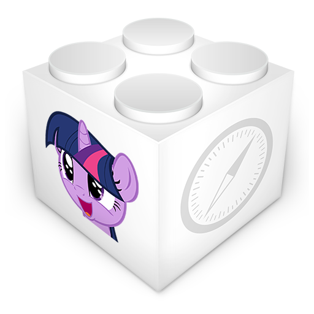

BetterPonymotes for Safari
Download
BetterPonymotes is now a native extension for Safari. Just download, and click to install. That's it! For more information, or for other versions, please visit the official BetterPonymotes site.
View and download the source on GitHub.
| BPM Version | Bundle Version |
|---|---|
| 64.208 | 1.1.3 |
Thank you to uxyd on deviantArt for the image.